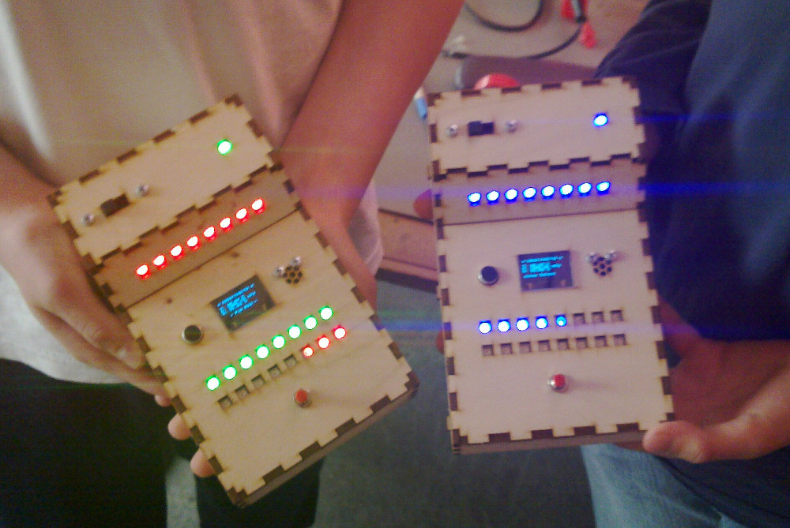

Die Ferienpassaktion "Multifunktionssensor bauen" ist auch in diesem Jahr erfolgreich zu Ende gegangen.
Da wir diesmal im Vergleich zum Vorjahr ein komplexeres Projekt gewählt haben und dies der erste Versuch war, hat es diesmal etwas länger gedauert um alles fertig zu bauen. Nach Ausbesserung einiger üblicher Lötfehler konnten aber schließlich alle Teilnehmer einen blinkend funktionierenden Sensor mit nach Hause nehmen.
Ich danke an dieser Stelle allen Helfern, ohne die wir keine eigene Platine, kein fancy (Tricorder-) Gehäuse und keine so gute Betreuung gehabt hätten!
Der Code des Projekts ist auch Github zu finden: https://github.com/ktt-ol/Ferienpass/
 {% endblock content %}